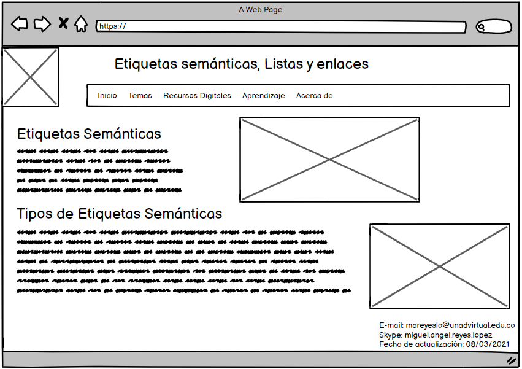

Etiquetas Semánticas
HTML5 incorpora nuevas etiquetas pensadas para hacer que la estructura de
la página web sea más lógica y funcional. Antes de HTML5, la estructura de una
página se basaba fundamentalmente en etiquetas < div>, generalmente asociadas a una
clase o a un id. Por ejemplo, en HTML 4.0 para definir la cabecera de una página web se
suele utilizar algo como: < div id="header" > Nombre de la cabecera < /div>
De esta forma, para definir por ejemplo la anchura, altura y color de fondo de la cabecera
en el código CSS se utilizaría por ejemplo: #header {width:960px; height:100px; background-color:blue;}
Celaya Luna, A. (2014). Creación de páginas web: HTML 5. Málaga, Spain: Editorial ICB.
Recuperado de https://elibro-net.bibliotecavirtual.unad.edu.co/es/ereader/unad/56045?page=28.
Etiquetas Semánticas
En la especificación HTML5 existe ya una etiqueta llamada < header> que viene a sustituir al elemento < div>
de forma que la sintaxis es mucho más lógica y coherente, se trata de un tipo de etiqueta llamada semántica
porque da una noción del tipo de contenido que englobará: < header> Nombre de la cabecera < /header>
En este ejemplo ya se pueden añadir directamente las propiedades de estilo (ancho, alto, color de fondo, etc.)
en una regla para el nuevo elemento header de CSS: header {width:960px; height:100px; background-color:blue;}
En definitiva, en HTML5 se incorporan las etiquetas semánticas: < header>...< /header>: Para definir la cabecera de la página.
< footer>...< /footer>: Para definir el pie de página. Normalmente contiene datos sobre quien ha creado la página, datos del copyright,
etc. < nav>...< /nav>: Permite definir un elemento de navegación de la página web, como el menú principal o menús secundarios.
< section>...< /section>: Se utilizan para encerrar el código correspondiente a una sección genérica dentro de un documento.
< aside>...< /aside>: Sirve para delimitar todo aquel contenido que no es directamente contenido principal de esa página en concreto.
Puede usarse por tanto para todos aquellos elementos secundarios como bloques publicitarios, enlaces externos, citas, un calendario, etc.
< article>...< /article>: Se utiliza para definir artículos como noticias, entradas de un blog, etc. Es probablemente uno de los más
importantes de HTML5, ya que permite indicar cuál es el contenido de una página web. El siguiente ejemplo podría ser una visualización
esquemática de la estructura de una página web utilizando las nuevas etiquetas semánticas de HTML5:
Celaya Luna, A. (2014). Creación de páginas web: HTML 5. Málaga, Spain: Editorial ICB.
Recuperado de https://elibro-net.bibliotecavirtual.unad.edu.co/es/ereader/unad/56045?page=29.

